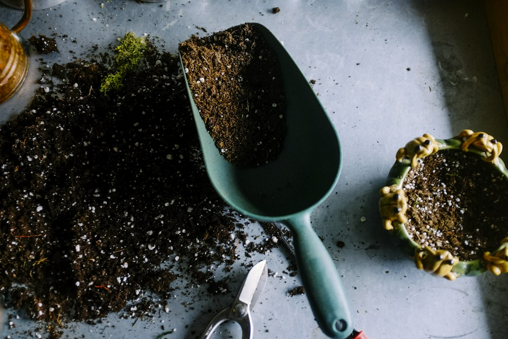

Less is often more
Watering Tips
Check the soil before you reach for the watering can. If the top inch feels dry, water slowly until a little drains through, then empty the saucer.
Read MoreSimple, thoughtful routines
Plants are happiest with a little attention and the right conditions. Start with these simple basics and adjust as you get to know yours.
Less is often more
Check the soil before you reach for the watering can. If the top inch feels dry, water slowly until a little drains through, then empty the saucer.
Read MoreFollow the light
Most houseplants appreciate bright, indirect light. Notice how the sun moves through your rooms and keep delicate leaves out of harsh midday rays.
Read More
A little seasonal support
During active growing months, feed lightly according to your plant's needs. Trim tired leaves and wipe dust from foliage to keep it looking its best.
Read MoreTake a quiet moment
Keep it handy
View the six-page guide in a new tab.
Every plant and home is different. Let the plant's leaves, soil, and growth guide your routine.